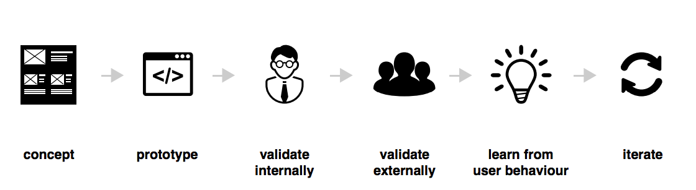

Buongiorno!
Per favore, scrivete il vostro nome e cognome e il vostro ambito/ruolo aziendale su un post it e consegnatelo a Marco (quello più assonnato di tutti di fronte a voi)
Lean UX Workshop
Ordine degli Ingegneri della Provincia di Vicenza
Commissione ICT
Qualcosa su di me

Front and back end engineer
http://www.duss.in
marco@duss.in
@marcodussin
it.linkedin.com/in/marcodussin/
| Argomento | Pomodori |
|---|---|
| Design thinking for icebreaking | 1 |
| Introduzione al percorso Lean UX | 2 |
| Brainstorming 1: supposizioni vs requisiti | 1 |
| Brainstorming 2: ipotesi | 1/2 |
| Brainstorming 3: dichiarare le supposizioni con le personas | 1 |
| Brainstorming 4: dichiarare i risultati attesi e il modo per misurarli | 1/2 |
| Brainstorming 5: MVP | 1/2 |
| Varie, domande, blablabla | 1/2 |
| Totale | 7 |
Design thinking
“…innovation powered by…direct observation of what people want and need in their lives and what they like or dislike about the way particular products are made, packaged, marketed, sold, and supported…”
TIM BROWN
--> Ogni aspetto di business può essere affrontato con metodologie di design.
Visual thinking
“Il visual thinking è un metodo di organizzazione dei propri pensieri”
DAVE GRAY
--> Squiggle birds
Icebreaking
Empathy Map
Icebreaking
Aspettative dal workshop
Introduzione al percorso Lean UX
11,6 secondi
(Jon Jenkins, Velocity 2011, https://youtu.be/dxk8b9rSKOo)
Che cosa è lo "sviluppo agile di software"?
Stiamo scoprendo modi migliori di creare software,
sviluppandolo e aiutando gli altri a fare lo stesso.
Grazie a questa attività siamo arrivati a considerare importanti:
Gli individui e le interazioni più che i processi e gli strumenti
Il software funzionante più che la documentazione esaustiva
La collaborazione col cliente più che la negoziazione dei contratti
Rispondere al cambiamento più che seguire un piano
Ovvero, fermo restando il valore delle voci a destra,
consideriamo più importanti le voci a sinistra.
Che cosa è la "lean production"?
Che cosa è la "lean production"?

The Lean Startup methodology has as a premise that every startup is a grand experiment that attempts to answer a question. The question is not "Can this product be built?" Instead, the questions are "Should this product be built?" and "Can we build a sustainable business around this set of products and services?" This experiment is more than just theoretical inquiry; it is a first product
Eric Ries
NON costruiamo oggetti che la gente NON vuole


Che cosa è la "lean UX"?
Il concetto di Lean UX nasce dal mettere assieme i principi di Lean Startup con le teorie di sviluppo agile di software. In aggiunta a queste due fondamenta, ce n'è una terza altrettanto importante: il Design Thinking come metodo adatto a fornire soluzioni pratiche e creative ai problemi.
Che cosa è la "lean UX"?
In aggiunta ai "pilastri" precedenti, la Lean UX pone meno enfasi nei "DELIVERABLES" e si focalizza maggiormente sulla comprensione condivisa dell'esperienza utente che si desidera fornire

Che cosa è la "lean UX"?
“Lean UX is, at its core, a mindset”
Jeff Gothelf
La Lean UX coinvolge team
- piccoli
- dedicati
- cross-funzionali
- che lavorano in spazi condivisi
- che comunicano tra di loro
- che imparano a rafforzare le proprie relazioni
Il processo di Lean UX
Lo scopo è far muovere in un percorso parallelo lo sviluppo e il design
Nordstrom Innovation Lab: Sunglass iPad App Case Study
In sintesi:
- team piccoli e multifunzionali
- designers + biz + developers + ... = 1 team
- la ricerca presso gli utenti è la miglior fonte di informazione
- concentrarsi nel risolvere il problema "giusto"
- generare molte opzioni e decidere velocemente quale perseguire
- riconoscere le ipotesi e validarle
Brainstorming 1: supposizioni vs requisiti
suppórre v. tr. [dal lat. supponĕre, comp. di sub- e ponĕre «porre», propr. «mettere sotto»; il sign. corrente risale al lat. tardo] (coniug. come pórre). –
1. Ammettere per congettura; immaginare che una cosa sia o possa verificarsi in un determinato modo; fare una ipotesi che spieghi una realtà comunque osservata[...] anche nel linguaggio matematico e scient., ammettere come ipotesi per trarne conseguenze[...]. Anche, presumere, immaginare[...].
Treccani online
- Ogni decisione fatta a proposito dell'offerta del proprio prodotto è una decisione che impatta sull'esperienza del destinatario di tale prodotto
- Prioritizziamo il processo di apprendimento piuttosto che quello di crescita
- Le proprie supposizioni vanno dichiarate per poter essere testate
- Prioritizziamo il fare piuttosto che l'analisi
- Valutiamo i nostri risultati in modo continuo, e preparati anche a repentini cambi di rotta
Dichiarare le proprie supposizioni
Quali sono le supposizioni a proposito dei nostri utenti/acquirenti/clienti (i loro bisogni e le nostre soluzioni) che abbiamo posto a fondamento del progetto, e che, se confutate, ci porteranno al fallimento?
Esempi di supposizioni
- Come acquisiremo nuovi clienti?
- Come guadagneremo nuona liquidità?
- Chi sono i nostri competitor?
- Che cosa ci differenzia nel mercato?
- Quali sono i nostri rischi? Quale il maggiore?
- Come li supereremo?
Presentazione del progetto di gruppo
Business problem
Supposizioni
- Chi è l'utente?
- Quali risultati sono attesi?
- Che features sono necessarie per raggiungere tali risultati?
- Quali risultati di business sono importanti per noi?
Brainstorming 2: ipotesi
Noi crediamo che:
- [facendo questo]
- per [questo utente]
- otterremo [questo risultato]
Sapremo che è vero quanto avremo ottenuto
- [questa risposta dal mercato]
Brainstorming 3: dichiarare le supposizioni con le personas

Brainstorming 4: dichiarare i risultati attesi e il modo per misurarli
Che cosa è "avanzamento"?
- Industria manifatturiera: produzione di beni di qualità
- Agile software: rilascio di software funzionante
- Lean Startup: validated learningi>
- Lean UX: risultati e loro impatto
Prodotto, risultato, impatto
- Prodotto: "il software che diamo al cliente", "il bene che inscatoliamo e spediamo"
- Risultato: "il cambiamento misurabile che abbiamo apportato nelle abitudini del cliente"
- Impatto: "la misura ad alto livello della salute del nostro business"
Prodotto, risultato, impatto
- Prodotto: "la nuova pagina di registrazione del sito"
- Risultato: "numero di utenti che arrivano alla fine del processo di registrazione senza fare errori"
- Impatto: "nuovi utenti registrati in un anno rispetto allo scorso"
Attenzione alla "mania da nuova feature"
Brainstorming 5: MVP
THE END
 Special thanks to Jeff Gothelf (@jboogie) for his inspiration, siles and suggestions given during his workshop (Jan. 2015) in Bologna
Special thanks to Jeff Gothelf (@jboogie) for his inspiration, siles and suggestions given during his workshop (Jan. 2015) in Bologna